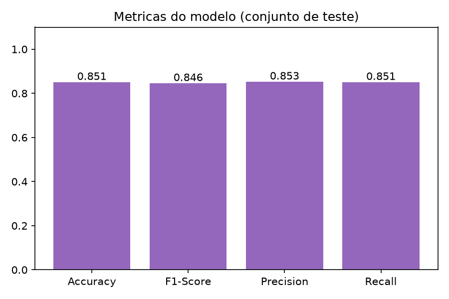
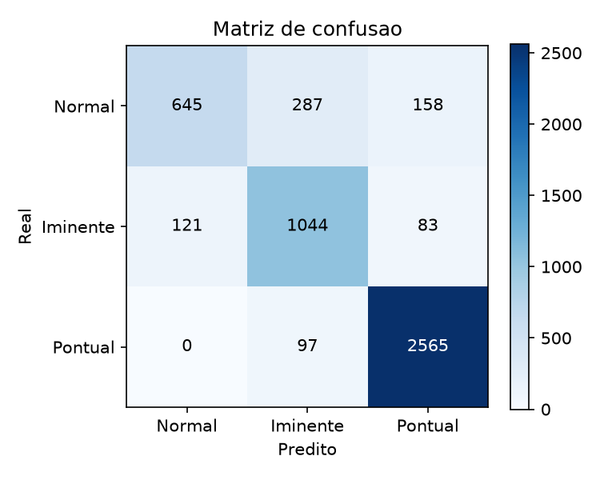
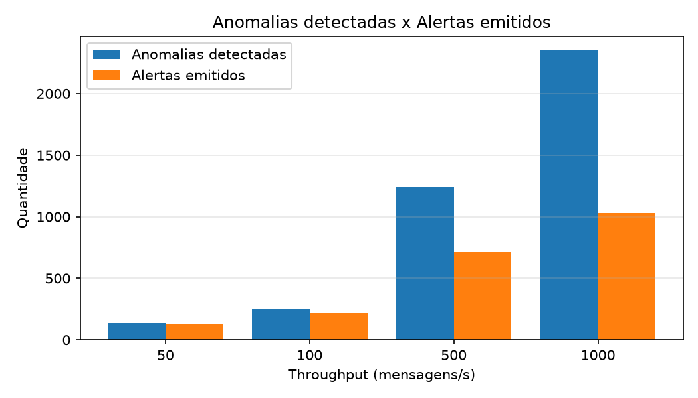
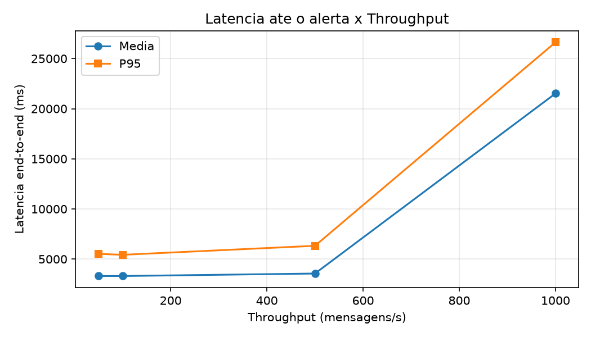
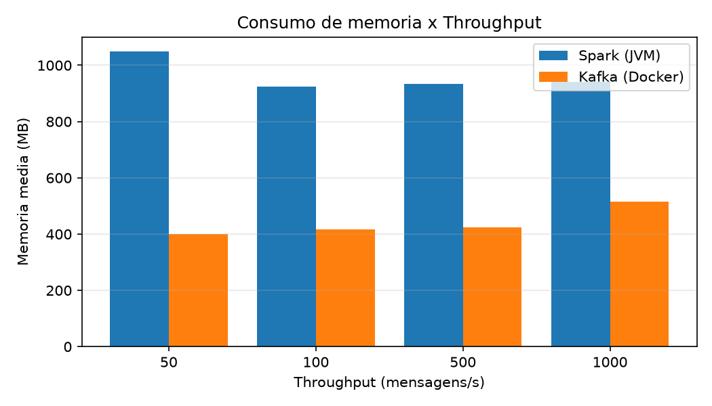

Monitoramento em Tempo Real de Poços de Petróleo — Dataset 3W Petrobras (Sistemas Distribuídos)
produtor_3w.py (incluindo evento_classe) e contrato da Pessoa 2.pyspark.ml com KMeans (k=4) + RandomForestClassifier.NORMAL, ANOMALIA_IMINENTE e ANOMALIA_PONTUAL em cada micro-batch.validar_saidas_p3.py) com números reais consolidados.pyspark.mlReconhecimento de padrões operacionais e detecção de anomalias pontuais e iminentes
P-PDG, P-TPT, T-TPT, P-MON-CKP, T-JUS-CKP, P-JUS-CKGL, T-JUS-CKGL e QGL.z_score_medio, z_score_max, sensores acima de 2σ/3σ e gradientes de pressão e temperatura.pyspark.ml (split 80/20 antes do fit):Imputer → VectorAssembler (14D) → StandardScaler → KMeans(k=4) → RandomForest(60 árvores).
Accuracy, F1, Precision e Recall = 0,9755
0 confusões entre Normal e PontualGarantia de gravação estruturada, agregações por poço e controle de ruído operacional
resultados/parquet/eventos_processados/ — particionado por poco_id (telemetria + predições).resultados/parquet/agregacoes_pocos/ — médias de sensores, Z-Score máx., taxa de anomalia (%) e latência por poço.resultados/parquet/alertas_anomalias/ — registros anômalos auditáveis + saída em consola por batch.teste_pipeline_p3.py grava e relê via spark.read.parquet (assert exato nas 3 camadas).validar_saidas_p3.py confirma 2.092 alertas emitidos = 2.092 recebidos (0 perdas).
Redução média de 47,3% no ruído de alertas (até 56,2% em 1.000 msg/s)Dados extraídos diretamente dos CSVs em resultados/ e consolidados em resultados/resumo_metricas_p3.json
| Taxa | Eventos | Anomalias | Alertas | Lat. Média | P95 | Spark RAM |
|---|---|---|---|---|---|---|
| 50/s | 6.000 | 135 | 130 | 3,31 s | 5,43 s | 1.049 MB |
| 100/s | 12.000 | 249 | 219 | 3,31 s | 5,43 s | 924 MB |
| 500/s | 60.000 | 1.239 | 714 | 3,56 s | 6,32 s | 934 MB |
| 1000/s | 120.000 | 2.348 | 1.029 | 21,52 s* | 26,62 s | 941 MB |
*Em 1.000 msg/s houve saturação planejada pelo teto maxOffsetsPerTrigger=2000/2s (~950 msg/s), mantendo 0% de perda e RAM constante.

Latência E2E × Throughput
Memória Spark & Kafka estáveisChecklist final concluído para a demonstração ao vivo e defesa técnica
teste_pipeline_p3.py.resumo_metricas_p3.json.